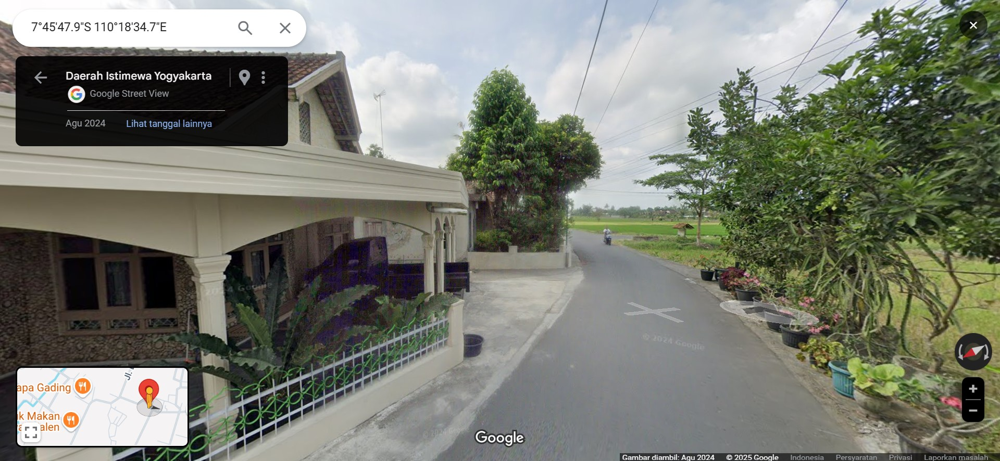
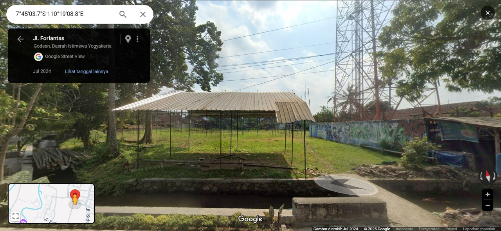
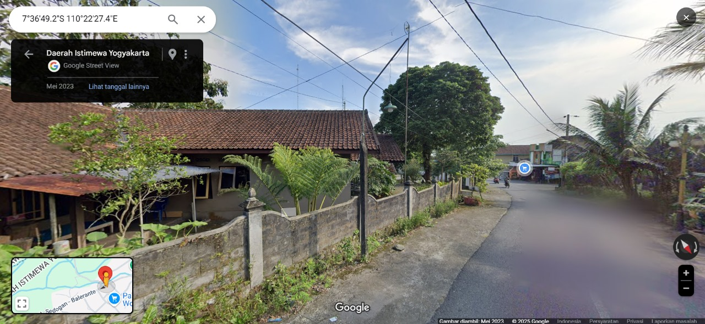

Sensor yang Digunakan

DHT22
Sensor untuk memantau suhu dan kelembaban secara akurat.

GPS NEO 6M
Sensor GPS untuk menentukan lokasi dengan presisi tinggi.

ESP32
Microcontroller untuk pengelolaan data dan komunikasi IoT.
Titik Pemantauan


🗺️
Titik 4: Margoluwih, Seyegan, Sleman
Latitide:
Longitude:


🗺️
Titik 6: Sidomoyo, Godean, Sleman
Latitide:
Longitude:

🗺️
Titik 7: Sempu, Tlatar, Wono Kerto
Latitide:
Longitude:
Lokasi Kantor Pusat
Universitas Pakuan
Alamat:Jl. Pakuan, RT.02/RW.06, Tegallega, Kecamatan Bogor Tengah, Kota Bogor, Jawa Barat 16129
Email:rektorat@unpak.ac.id
Telepon: +62-811-1234-5678